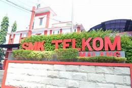

SMK TELKOM MALANG

SMK Telkom Malang adalah pelopor Sekolah menengah kejuruan pertama
di Indonesia di bidang Teknologi dan Informatika.
Berpengalaman dari tahun 1992 yang telah terakreditasi "A" dan
mempunyai standart mutu ISO 9001:2008.Rekayasa Perangkat Lunak
Mempelajari seluruh aspek produksi software seperti aplikasi website, aplikasi android, maupun aplikasi dekstop.
Teknik Komputer dan Jaringan Mempelajari cara merakit dan instalasi komputer, instalasi jaringan Local Area Network (LAN) dan Wide Area Network (WAN).